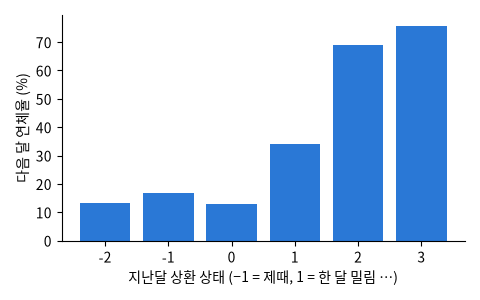

Yeh & Lien (2009). 대만 카드 고객 30,000명의 2005년 4~9월 기록: 한도 · 성별 · 학력 · 혼인 · 나이 · 6달 상환 상태 · 청구액 · 납부액 → 다음 달 연체 여부 (Hugging Face 의 CSV 사본)

| LIMIT_BAL | SEX | EDUCATION | MARRIAGE | AGE | PAY_1 | PAY_2 | PAY_3 | PAY_4 | PAY_5 | PAY_6 | BILL_AMT1 |
|---|---|---|---|---|---|---|---|---|---|---|---|
| 20,000 | 1 | 1 | 2 | 33 | 1 | 2 | 2 | 2 | 2 | 2 | 17,971 |
| 20,000 | 2 | 2 | 2 | 35 | 0 | 0 | 2 | 0 | 0 | 0 | 16,528 |
| 230,000 | 2 | 1 | 1 | 44 | 1 | -1 | -1 | -1 | -1 | -2 | 3884 |
| 100,000 | 1 | 2 | 1 | 42 | 0 | 0 | 0 | 0 | 0 | 0 | 98,430 |
| 150,000 | 1 | 1 | 2 | 29 | -2 | -2 | -2 | -2 | -2 | -2 | 4583 |
| 50,000 | 1 | 2 | 2 | 25 | -1 | 3 | 2 | 0 | 0 | 0 | 10,695 |
| 열 | 종류 | 빈칸 | 고유값 수 | 범위 · 대표값 |
|---|---|---|---|---|
| LIMIT_BAL | 숫자 | 0 | 81 | 10,000 ~ 1,000,000 (평균 167,484.3) |
| SEX | 숫자 | 0 | 2 | 1 ~ 2 (평균 1.604) |
| EDUCATION | 숫자 | 0 | 7 | 0 ~ 6 (평균 1.853) |
| MARRIAGE | 숫자 | 0 | 4 | 0 ~ 3 (평균 1.552) |
| AGE | 숫자 | 0 | 56 | 21 ~ 79 (평균 35.49) |
| PAY_1 | 숫자 | 0 | 11 | -2 ~ 8 (평균 -0.0167) |
| PAY_2 | 숫자 | 0 | 11 | -2 ~ 8 (평균 -0.1338) |
| PAY_3 | 숫자 | 0 | 11 | -2 ~ 8 (평균 -0.1662) |
| PAY_4 | 숫자 | 0 | 11 | -2 ~ 8 (평균 -0.2207) |
| PAY_5 | 숫자 | 0 | 10 | -2 ~ 8 (평균 -0.2662) |
| PAY_6 | 숫자 | 0 | 10 | -2 ~ 8 (평균 -0.2911) |
| BILL_AMT1 | 숫자 | 0 | 22,723 | -165,580 ~ 964,511 (평균 51,223.3) |
| BILL_AMT2 | 숫자 | 0 | 22,346 | -69,777 ~ 983,931 (평균 49,179.1) |
| BILL_AMT3 | 숫자 | 0 | 22,026 | -157,264 ~ 1,664,089 (평균 47,013.2) |
| BILL_AMT4 | 숫자 | 0 | 21,548 | -170,000 ~ 891,586 (평균 43,262.9) |
| BILL_AMT5 | 숫자 | 0 | 21,010 | -81,334 ~ 927,171 (평균 40,311.4) |
두 달 이상 밀린 사람은 70% 가까이 다시 연체한다
나이 차이는 상환 기록에 비하면 작다
| ① 한 행 | 카드 고객 한 명 |
| ② 입력 X | 한도 · 지난 6달 상환 상태 · 청구액 · 납부액 (+ 성별 · 나이 · 학력?) |
| ③ 출력 y | 다음 달 연체할까 |
| ④ 평가지표 | ROC-AUC · 재현율, 집단별 차이 |
| ⑤ 기준선 | 아무도 연체 안 한다 |
문제를 정할 때 처음 채워 보는 칸들입니다. 여기서 끝이 아니라, 시험 데이터를 어떻게 나눌지 · 틀렸을 때 손해가 얼마인지 · 예측 시점에 정말 알 수 있는 값인지 같은 칸을 더 붙일수록 좋은 문제가 됩니다.
nobody defaults: accuracy 77.9%
all features ROC-AUC 0.775 recall 35.8% flagged by sex {1: '12.4%', 2: '11.1%'}
without sex/age/marriage/education ROC-AUC 0.775 recall 36.1% flagged by sex {1: '12.1%', 2: '11.3%'}누가, 왜, 어떻게 만든 데이터인지 직접 확인해 보세요.
프로젝트 주제를 고를 때 참고하세요 (일반적인 예시).